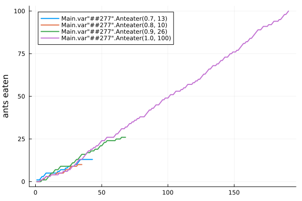

Anteaters competing for food
A demonstration of controlling multiple agents using IterationControl.jl
The source for this demonstration can be found here.
Controlling competing iterative models in parallel is useful in optimization. For example, one might try several different optimization strategies in parallel, and divert resources to the strategy or strategies that are performing best.
In this toy illustration, several anteaters of varying health compete for food from a common supply - a stream of random "ant" or inedible "seed" items. An anteater's health attribute is the probability he is able to successfully catch an ant when the source makes it available.
If an anteater's score (the number of ants consumed) falls too far behind that of the leader, he stops consuming (his "training" stops early). An anteater also stops if he reaches the specified goal.
Anteaters forage for food in parallel using Julia multi-threading.
using IterationControl
using .Threads
using Random
Random.seed!(123)
using PlotsCreate a channel to supply food
N = 1_000_000
food = Channel{String}() do ch
foreach(i -> put!(ch, rand(["ant", "seed"])), 1:N)
end
[take!(food) for i in 1:3]3-element Vector{String}:
"seed"
"seed"
"ant"Define anteaters and how to "train" them
mutable struct Anteater
health::Float64 # 0.0 = dead; 1.0 = excellent health
n::Int # number of ants consumed
Anteater(health) = new(health, 0)
end
function eat!(eater::Anteater)
take!(food) == "ant" && rand() <= eater.health && (eater.n += 1)
return eater
end;"Training" for n iterations means take n items from the food source and try to catch and eat each item if it is an "ant":
function IterationControl.train!(eater::Anteater, n::Int)
foreach(i->eat!(eater), 1:n)
return eater
end;Create a collection of competitors
eaters = [Anteater(0.7), Anteater(0.8), Anteater(0.9), Anteater(1.0)]4-element Vector{Main.var"##277".Anteater}:
Main.var"##277".Anteater(0.7, 0)
Main.var"##277".Anteater(0.8, 0)
Main.var"##277".Anteater(0.9, 0)
Main.var"##277".Anteater(1.0, 0)n_eaters = length(eaters);Define the controls that will define the rules of the competition
const LEAD_TRIGGERING_DEFEAT = 5
const ANTS_TO_WIN = 100
scores(eaters) = [e.n for e in eaters]
is_too_far_behind(eater) =
maximum(scores(eaters)) - eater.n > LEAD_TRIGGERING_DEFEAT
has_won(eater) = eater.n >= ANTS_TO_WIN
controls = [
Step(1),
Callback(is_too_far_behind, stop_if_true=true),
Callback(has_won, stop_if_true=true),
Callback(eater->eater.n),
NumberLimit(1000),
];Run the competition
tasks = [Threads.@spawn IterationControl.train!(e, controls...) for e in eaters]
histories = map(fetch.(tasks)) do traces
traces[4].called_back
end4-element Vector{Vector{Int64}}:
[1, 1, 1, 2, 3, 3, 4, 5, 5, 5, 5, 5, 5, 5, 5, 5, 6, 6, 7, 7, 7, 7, 8, 8, 9, 9, 9, 9, 9, 10, 10, 11, 12, 13, 13, 13, 13, 13, 13, 13, 13, 13, 13]
[0, 0, 0, 1, 1, 1, 2, 3, 3, 3, 4, 4, 4, 4, 4, 5, 5, 5, 5, 5, 5, 6, 7, 7, 7, 8, 9, 9, 9, 9, 9, 10, 10, 10, 10]
[0, 0, 0, 0, 1, 1, 1, 1, 2, 3, 4, 5, 5, 6, 7, 7, 7, 8, 9, 9, 9, 9, 9, 9, 9, 9, 10, 11, 11, 12, 13, 13, 14, 15, 16, 16, 16, 16, 17, 17, 17, 18, 18, 18, 19, 19, 19, 20, 21, 21, 22, 23, 23, 24, 24, 24, 24, 24, 24, 24, 25, 25, 25, 25, 26, 26, 26, 26]
[0, 0, 0, 1, 1, 2, 2, 3, 3, 3, 3, 4, 4, 4, 4, 4, 4, 5, 5, 5, 6, 6, 6, 6, 7, 7, 8, 9, 9, 10, 11, 12, 13, 13, 13, 14, 15, 16, 17, 18, 18, 19, 19, 20, 20, 21, 21, 22, 23, 24, 24, 24, 25, 26, 26, 26, 26, 26, 26, 27, 28, 28, 29, 30, 31, 31, 31, 32, 32, 33, 34, 34, 35, 35, 36, 36, 37, 37, 38, 38, 38, 38, 39, 40, 41, 42, 42, 43, 43, 44, 45, 45, 45, 46, 47, 48, 48, 49, 49, 49, 50, 51, 51, 51, 52, 53, 53, 53, 53, 54, 54, 55, 55, 56, 57, 57, 57, 57, 58, 58, 59, 59, 60, 60, 61, 62, 63, 63, 64, 65, 66, 66, 67, 68, 68, 68, 69, 69, 70, 71, 71, 72, 73, 73, 73, 74, 75, 75, 76, 76, 76, 77, 77, 78, 79, 80, 81, 81, 82, 82, 83, 84, 84, 85, 86, 87, 88, 89, 89, 89, 90, 91, 91, 91, 91, 92, 92, 92, 93, 94, 94, 94, 94, 95, 95, 96, 97, 98, 98, 99, 100]Plot the results
fig = plot()
for (j, e) in enumerate(eaters)
plot!(histories[j], label=repr(e), linewidth=2);
end
ylabel!(fig, "ants eaten");
savefig(fig, "anteaters.svg");
This page was generated using Literate.jl.